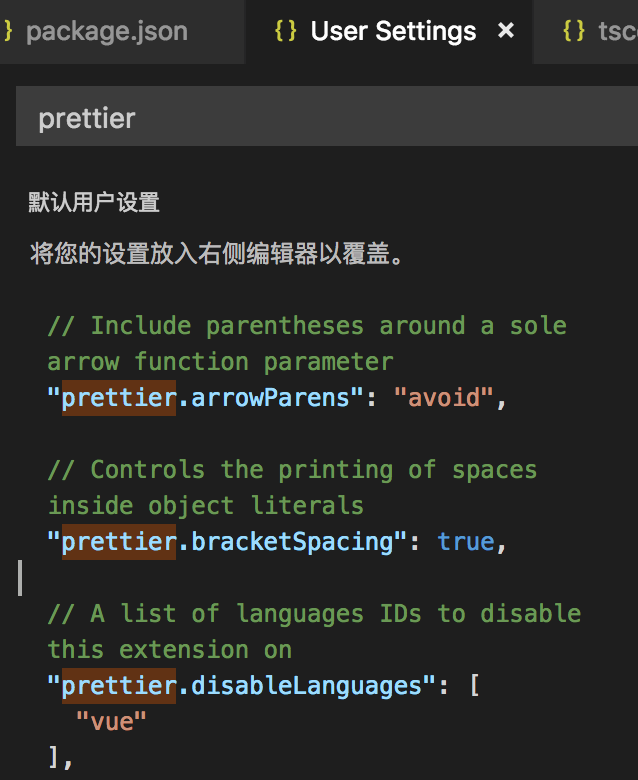
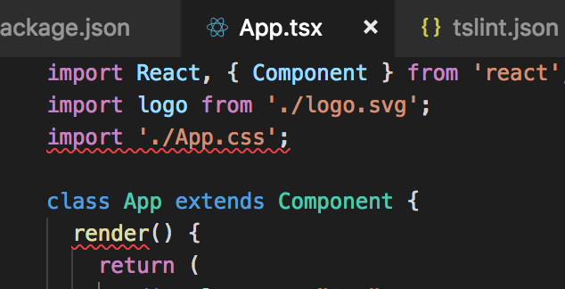
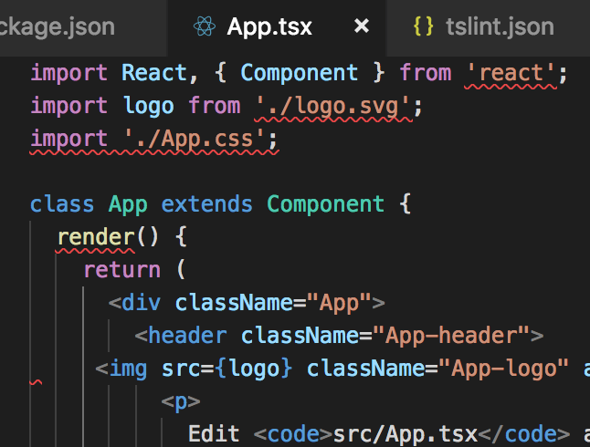

其实关于 React 和 TypeScript 开发环境的搭建，网上已经有许多的教程。可是当根据自己想要达到的效果，在网上看文档、找教程时，发现大部分都是零零碎碎的。没有一篇相对较为完整的教程，教你各个库的作用，怎么配置能达到怎么样的效果等等。自己也摸索了一段时间，现将自己的成果记录下来，也当一次总结。
根据这篇博文，最终你可以达到如下效果：
- VS Code 可以根据 TSLint 配置，显示语法错误
- VS Code 可以根据 Prettier 配置，显示代码格式错误
- 当保存文件时，能够自动修正格式错误
本文假设你已经了解什么是 React, TSLint, Prettier, TypeScript，并了解 VS Code 插件相关概念。
创建基于 TypeScript 的 React App
使用 Create React App 创建 React 应用
Create React App 是最流行的 React 脚手架，由 Facebook 官方维护，用它可以快速构建出基于 TypeScript 的 React 应用。我使用的版本是2.1.1，在终端中执行：
npx create-react-app react-ts-app --typescript
完成后生成的目录结构如下：
.
├── README.md
├── node_modules
├── package-lock.json
├── package.json
├── public
│ ├── favicon.ico
│ ├── index.html
│ └── manifest.json
├── src
│ ├── App.css
│ ├── App.test.tsx
│ ├── App.tsx
│ ├── index.css
│ ├── index.tsx
│ ├── logo.svg
│ ├── react-app-env.d.ts
│ └── serviceWorker.ts
└── tsconfig.json
我们主要用App.tsx文件来做实验.
安装 TSLint 和 Prettier 及其相关插件
因为我们是希望 TSLint 和 Prettier 结合一起使用，所以自然需要先安装相关库。在刚刚生成的 React 程序的根目录下执行：
npm install --save-dev tslint prettier tslint-config-prettier tslint-eslint-rules tslint-react
这里主要说一下 tslint-config-prettier 这个插件。由于 TSLint 和 Prettier 两者本身的校验规则是有冲突的，而这个插件的作用就是解决这个冲突使得两者可以同时使用。具体可以看这个插件的作者写的博文介绍：Use Prettier with TSLint and be happy。
安装完成后，在项目根目录新增tslint.json文件，添加如下配置：
{
"extends": [
"tslint:latest",
"tslint-react",
"tslint-eslint-rules",
"tslint-config-prettier"
]
}
至此，工程本身配置暂时告一段落，接下去我们来配置 VS Code。
安装 VS Code 插件
在 VS Code 上，安装 TSLint 和 Prettier 插件。安装完后，我们主要关心 Prettier 的配置，在配置里搜prettier，可以看见此时已集成了一些 Prettier 的配置：

然后我们看下App.tsx这个文件，发现 TSLint 已经开始启作用了：

图中的两个错误，分别是import必须按字母顺序，以及render函数要指明可访问的作用域。
那此时 Prettier 的错误是否也能提示出来呢？如果你试着将render函数中的html代码缩进随便改乱，会发现 VS Code 并不会提示错误，即使配置了 Prettier 的校验规则也没用。原因是因为 VS Code 本身不会提示 Prettier 的错误，我们需要将 Prettier 的错误转化为 TSLint 的错误，这个 VS Code 就可以正常提示了。
VS Code 整合 Prettier
首先，我们需要用到 tslint-plugin-prettier 这个插件。在项目根目录下执行：
npm install --save-dev tslint-plugin-prettier
同时修改tslint.json：
{
"extends": [
"tslint:latest",
"tslint-react",
"tslint-eslint-rules",
"tslint-config-prettier",
"tslint-plugin-prettier"
],
"rules": {
"prettier": true
}
}
完成之后，再去看App.tsx，可以发现 Prettier 的错误也提示了：

好了，现在还差最后一步，我们希望保存文件的时候，VS Code 能够自动纠正这些格式的错误。由于我使用的是2空格的缩进。为了方便查看效果，先将 Prettier 缩进设为4空格：
{
"rules": {
"prettier": [
true,
{
"tabWidth": 4
}
]
}
}
然后设置 VS Code 保存时自动格式化文件："editor.formatOnSave": true"tslint.autoFixOnSave": true。
（2018-12-11更新：VS Code 自带的editor.formatOnSave并不能达到想要的效果，比如ordered-imports规则，format 后语法都错了。）
完成之后，试着保存App.tsx，会发现双引号自动变成了单引号，img标签不正确的缩进也调整回去了，但是刚刚设置的4空格缩进仍未被修改，另外import的字典顺序错误依旧存在。这时，我们需要修改 VS Code 中 Prettier 插件的一个配置：prettier.tslintIntegration，将其值设为true。其内部实现机制是用的 prettier-tslint 这个库。总的来说就是 VS Code 内部关于 Prettier 格式调整规则有一套机制，且不能直接修改。一旦启用这个配置之后 Prettier 的调整规则就会根据tslint.json里配的来定。
现在，我们再保存文件，就可以看到未解决的缩进大小和字典序问题都能自动调整正确。至此，开发环境算是搭建完成。